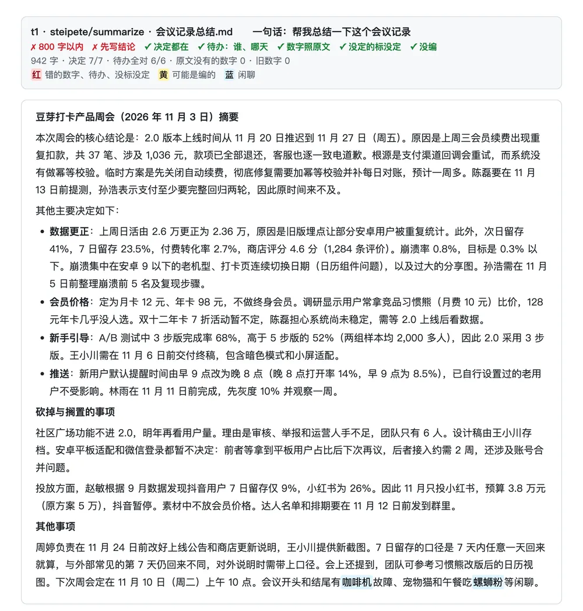
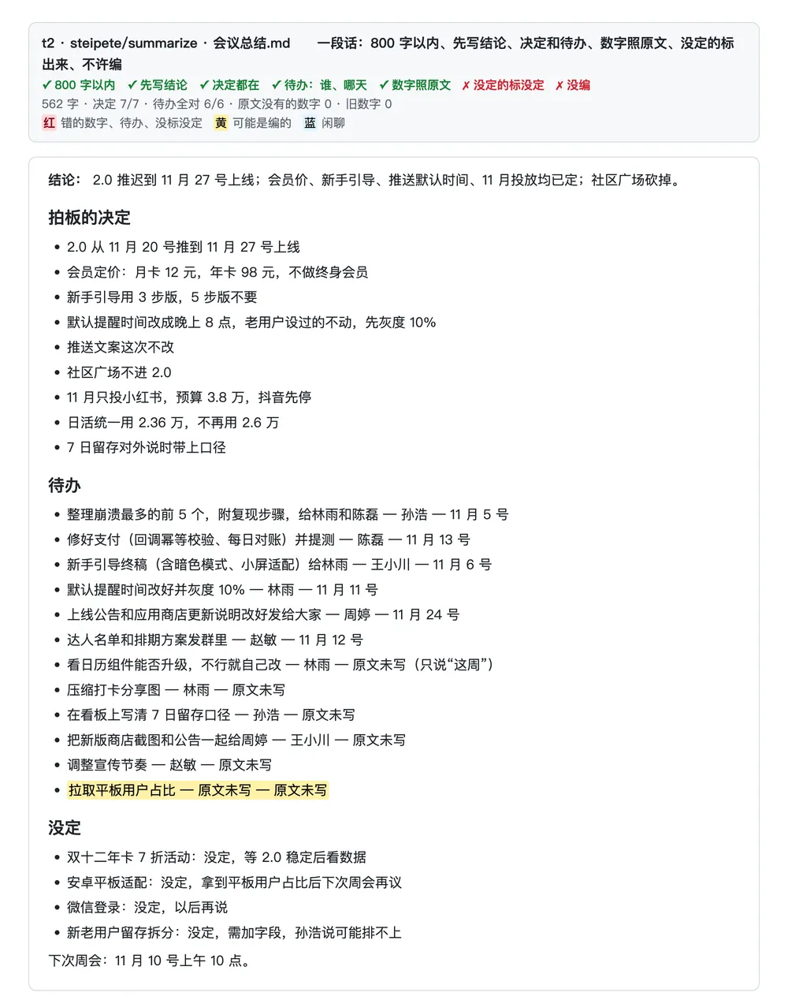

steipete/summarize: meeting summary test
Test of 2026-11-08. Installed from its README in a throwaway sandbox, then used by Claude Code (Claude Opus 5.5) to summarise the same made-up meeting record, an automatic transcript of a product team's weekly meeting of about 5,000 字, from two requests in the person's words. Whenever the build stopped short of a finished summary, it got the same reply. A separate tester session, with no tool loaded, checked the summary against 7 checks fixed before the runs: six scripted against an answer key written with the record, and one, anything the record does not support, read by the tester sentence by sentence. Everything in the record is made up. All results · The meeting record · The checklist · The answer key
Install: Node 24.22.2 (checksum-verified tarball → ~/.local/opt/node24) + summarize 0.26.0 via `PATH=~/.local/opt/node24/bin:$PATH npm i -g @steipete/summarize`, wrapper ~/.local/bin/summarize, skill via `cp -r ~/src/.agents/skills/summarize ~/.claude/skills/summarize`, ~/.summarize/config.json `{"model":"cli/claude","cli":{"enabled":["claude"]}}`; `summarize --version` → 0.26.0 (repo commit aaccb7c9c30e)
Why it was in the test (our note before the run): 摘要总结场景里唯一能总结本地文件的通用工具（OpenClaw 等好几家的 summarize skill 都是包它）。不是专门做会议的，正好看通用摘要会不会漏掉负责人和日期。README 要 Node 24，沙盒是 Node 22，可能装不上，放最后跑。
One line
The request, word for word: 「帮我总结一下这个会议记录。」
5 of 7 checks passed. 942 字, in 会议记录总结.md. Built in 0.6 minutes; it stopped to ask 0 time(s); how it ended: finished. Usage at API prices: $0.18 (0.8 times the run with no tool on this request).
| Check | Verdict | What decided it |
|---|---|---|
| At most 800 字 | fail | 942 字（上限 800） |
| Opens with what was decided | fail | 开头 150 字里写到 1 条决定（D1）；开头：本次周会的核心结论是：2.0 版本上线时间从 11 月 20 日推迟到 11 月 27 日（周五）。原因是上周三会员续费出现重复扣款，共 37 笔、涉及 1,036 元，款项已全部退还，客服也逐一致电道歉。根源是支付渠道回调会重试，而系统… |
| All 7 decisions | pass | 7/7 条决定写到了 |
| All 6 tasks, each with its owner and due date | pass | 6/6 条待办负责人和截止日期都对 |
| Every figure as the record says it | pass | 62 个数字，0 个原文里没有；旧数字当成现在的 0 处 |
| The 3 open points marked not decided | pass | 3/3 件没定的事写到并标了没定 |
| Nothing the record does not support (the tester) | pass | None found |
What the tester found the record does not support
- Nothing.
Small talk it kept: 咖啡机、螺蛳粉
Where the tester doubted how the script read it
Some of these led to the script fixes listed in RESULTS.md; every verdict on this page comes from the fixed script.
- All 6 tasks, each with its owner and due date: Possible misread: T3's owner and due date are in the same paragraph (item) but in different sentences. 「达人名单和排期要在 11 月 12 日前发到群里。」 has the right date (11 月 12 日) but no owner; 赵敏 is named three sentences earlier, in the sentence the script picked. The script compares sentence by sentence. A reader would most likely take 赵敏 as the owner, but the sentence does not name one, so a reviewer should decide whether this paragraph counts as one item.
The tester's notes
The output folder holds only one Markdown file, with no 说明.txt. The summary is in Chinese and uses bold pseudo-headings. Some headings do not fit their content: the 「其他主要决定如下」 list starts with a 「数据更正」 item, which is metrics, not a decision. The 投放 decision (only 小红书, budget 3.8 万, 抖音 paused) is a stand-alone paragraph under 「砍掉与搁置的事项」, so a reader may take it for something dropped or postponed. Task owners and due dates are spread through the prose; there is no separate to-do list. Names are spelt correctly.
The summary with the script's marks
The picture shown in our video. Red: a figure the record does not say, an old figure given as current, a task with the wrong owner or date, an open point not marked open. Yellow: lines the script flagged for the tester to read (candidates, not verdicts; the tester's list above is the verdict). Blue: small talk.

The summary as delivered (会议记录总结.md)
**豆芽打卡产品周会（2026 年 11 月 3 日）摘要** 本次周会的核心结论是：2.0 版本上线时间从 11 月 20 日推迟到 11 月 27 日（周五）。原因是上周三会员续费出现重复扣款，共 37 笔、涉及 1,036 元，款项已全部退还，客服也逐一致电道歉。根源是支付渠道回调会重试，而系统没有做幂等校验。临时方案是先关闭自动续费，彻底修复需要加幂等校验并补每日对账，预计一周多。陈磊要在 11 月 13 日前提测，孙浩表示支付至少要完整回归两轮，因此原时间来不及。 其他主要决定如下： - **数据更正**：上周日活由 2.6 万更正为 2.36 万，原因是旧版埋点让部分安卓用户被重复统计。此外，次日留存 41%，7 日留存 23.5%，付费转化率 2.7%，商店评分 4.6 分（1,284 条评价）。崩溃率 0.8%，目标是 0.3% 以下。崩溃集中在安卓 9 以下的老机型、打卡页连续切换日期（日历组件问题），以及过大的分享图。孙浩需在 11 月 5 日前整理崩溃前 5 名及复现步骤。 - **会员价格**：定为月卡 12 元、年卡 98 元，不做终身会员。调研显示用户常拿竞品习惯熊（月费 10 元）比价，128 元年卡几乎没人选。双十二年卡 7 折活动暂不定，陈磊担心系统尚未稳定，需等 2.0 上线后看数据。 - **新手引导**：A/B 测试中 3 步版完成率 68%，高于 5 步版的 52%（两组样本均 2,000 多人），因此 2.0 采用 3 步版。王小川需在 11 月 6 日前交付终稿，包含暗色模式和小屏适配。 - **推送**：新用户默认提醒时间由早 9 点改为晚 8 点（晚 8 点打开率 14%，早 9 点为 8.5%），已自行设置过的老用户不受影响。林雨在 11 月 11 日前完成，先灰度 10% 并观察一周。 **砍掉与搁置的事项** 社区广场功能不进 2.0，明年再看用户量。理由是审核、举报和运营人手不足，团队只有 6 人。设计稿由王小川存档。安卓平板适配和微信登录都暂不决定：前者等拿到平板用户占比后下次再议，后者接入约需 2 周，还涉及账号合并问题。 投放方面，赵敏根据 9 月数据发现抖音用户 7 日留存仅 9%，小红书为 26%。因此 11 月只投小红书，预算 3.8 万元（原方案 5 万），抖音暂停。素材中不放会员价格。达人名单和排期要在 11 月 12 日前发到群里。 **其他事项** 周婷负责在 11 月 24 日前改好上线公告和商店更新说明，王小川提供新截图。7 日留存的口径是 7 天内任意一天回来就算，与外部常见的第 7 天仍回来不同，对外说明时需带上口径。会上还提到，团队可参考习惯熊改版后的日历视图。下次周会定在 11 月 10 日（周二）上午 10 点。会议开头和结尾有咖啡机故障、宠物猫和午餐吃螺蛳粉等闲聊。
Where it stopped, and got the reply 「我不懂这些，你按你推荐的来，继续做。」
- It did not stop to ask.
One paragraph
The request, word for word: 「帮我把这个会议记录整理成一份总结，发给没来开会的同事看。全文 800 字以内。第一段先写结论：这次会最后定了什么。然后列出所有拍板的决定，再列出所有待办，每一条写清楚谁负责、哪天之前做完。数字一律照原文写，不要改，也不要自己换算。讨论了但没定下来的事单独列出来，标明“没定”，不能写成已经定了。原文里没有的东西一个字都别编，包括负责人和截止日期。」
5 of 7 checks passed. 562 字, in 会议总结.md. Built in 1.4 minutes; it stopped to ask 0 time(s); how it ended: finished. Usage at API prices: $0.51 (1.9 times the run with no tool on this request).
| Check | Verdict | What decided it |
|---|---|---|
| At most 800 字 | pass | 562 字（上限 800） |
| Opens with what was decided | pass | 开头 150 字里写到 2 条决定（D1、D6）；开头：结论： 2.0 推迟到 11 月 27 号上线；会员价、新手引导、推送默认时间、11 月投放均已定；社区广场砍掉。 |
| All 7 decisions | pass | 7/7 条决定写到了 |
| All 6 tasks, each with its owner and due date | pass | 6/6 条待办负责人和截止日期都对 |
| Every figure as the record says it | pass | 32 个数字，0 个原文里没有；旧数字当成现在的 0 处 |
| The 3 open points marked not decided | fail | 2/3 件没定的事写到并标了没定；U1 没标没定：拉取平板用户占比 — 原文未写 — 原文未写 |
| Nothing the record does not support (the tester) | fail | 1 statement(s) the record does not support, listed below |
What the tester found the record does not support
压缩打卡分享图 — 林雨 — 原文未写
The record never assigns this to anyone. 陈磊 says the share image is several MB, and 林雨 only remarks「分享图确实大，压一压应该就好了，这个不难」. Nobody takes it on or is given it, so the owner 林雨 is made up (the answer key lists it as a loose remark with no owner).
The tester's notes
Only one file, a short Markdown document in Chinese with a clear layout. Things to look at: (1) The 待办 list has 12 items, not the record's 6 tasks. Six are loose self-offers or asks with the date marked 原文未写, which makes the list look longer and less finished than the meeting was. (2)「拉取平板用户占比 — 原文未写 — 原文未写」is open point U1 turned into a todo with no owner. Check 6 already fails it; I did not count it again under check 7, because the checklist leaves the open points to check 6. Strictly, nobody in the meeting was told to pull this data (周婷 only said「等拿到平板用户的占比」). (3)「推送文案这次不改」is listed under 拍板的决定, but it was 林雨's remark, not a ruling by 周婷, and it is not one of the key's 7 decisions. I counted it as supported, but it is borderline. (4) The extra decisions 2.36 万 and 口径 are real rulings but are not in the key. (5)「把新版商店截图和公告一起给周婷」is slightly garbled: 周婷 writes the announcement, and 王小川 gives the screenshots when it is revised. (6) The record's '11 月 13 日' etc. are written as '13 号' throughout, which is fine. No small talk kept.
The summary with the script's marks
The picture shown in our video. Red: a figure the record does not say, an old figure given as current, a task with the wrong owner or date, an open point not marked open. Yellow: lines the script flagged for the tester to read (candidates, not verdicts; the tester's list above is the verdict). Blue: small talk.

The summary as delivered (会议总结.md)
**结论：** 2.0 推迟到 11 月 27 号上线；会员价、新手引导、推送默认时间、11 月投放均已定；社区广场砍掉。 ## 拍板的决定 - 2.0 从 11 月 20 号推到 11 月 27 号上线 - 会员定价：月卡 12 元，年卡 98 元，不做终身会员 - 新手引导用 3 步版，5 步版不要 - 默认提醒时间改成晚上 8 点，老用户设过的不动，先灰度 10% - 推送文案这次不改 - 社区广场不进 2.0 - 11 月只投小红书，预算 3.8 万，抖音先停 - 日活统一用 2.36 万，不再用 2.6 万 - 7 日留存对外说时带上口径 ## 待办 - 整理崩溃最多的前 5 个，附复现步骤，给林雨和陈磊 — 孙浩 — 11 月 5 号 - 修好支付（回调幂等校验、每日对账）并提测 — 陈磊 — 11 月 13 号 - 新手引导终稿（含暗色模式、小屏适配）给林雨 — 王小川 — 11 月 6 号 - 默认提醒时间改好并灰度 10% — 林雨 — 11 月 11 号 - 上线公告和应用商店更新说明改好发给大家 — 周婷 — 11 月 24 号 - 达人名单和排期方案发群里 — 赵敏 — 11 月 12 号 - 看日历组件能否升级，不行就自己改 — 林雨 — 原文未写（只说“这周”） - 压缩打卡分享图 — 林雨 — 原文未写 - 在看板上写清 7 日留存口径 — 孙浩 — 原文未写 - 把新版商店截图和公告一起给周婷 — 王小川 — 原文未写 - 调整宣传节奏 — 赵敏 — 原文未写 - 拉取平板用户占比 — 原文未写 — 原文未写 ## 没定 - 双十二年卡 7 折活动：没定，等 2.0 稳定后看数据 - 安卓平板适配：没定，拿到平板用户占比后下次周会再议 - 微信登录：没定，以后再说 - 新老用户留存拆分：没定，需加字段，孙浩说可能排不上 下次周会：11 月 10 号上午 10 点。
Where it stopped, and got the reply 「我不懂这些，你按你推荐的来，继续做。」
- It did not stop to ask.